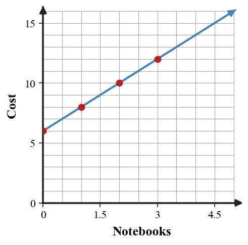
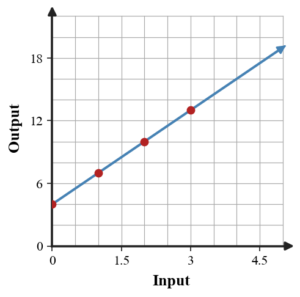
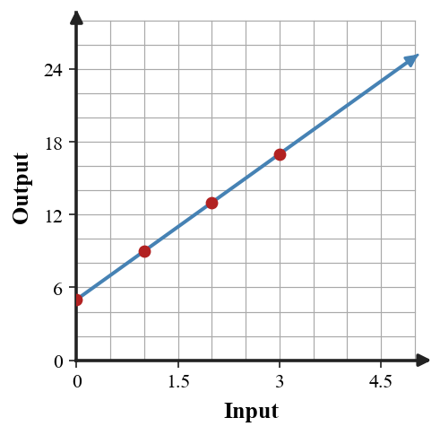

Multiple Representations of Relationships
Mathematical idea: A relationship can look different in each representation but still describe the same input-output pattern.
Today you will move between a context, a table, a graph, and an equation. You will also use values, rates, and patterns as evidence when deciding whether two representations match.
Learning Target
Learning Target: Students will connect tables, graphs, equations, and contexts that represent the same relationship.
I can statements
- I can construct a table, graph, equation, or context from another representation of the same relationship.
- I can use features in one representation to work with a related table, graph, equation, or context.
- I can determine whether two representations belong to the same relationship using evidence from values, rates, or patterns.
What's To Come
This is a long-range preview for future lessons. Do not solve it today. Instead, annotate it individually. Circle anything familiar, underline symbols or directions that seem important, and write notes about what information you think will be needed later.
As you annotate, ask yourself: What parts (words, symbols, graphs) do you KNOW? What parts look FAMILIAR? What parts look like jibberish?
Design a connected model for a short situation where a total begins at $6$ and changes by the same amount each step. Include a context, equation, four-row table, and graph on the blank coordinate plane. Make sure all four representations agree.

Intro
Directions
Read the introduction aloud with a partner or in a small group. As you read, annotate the text by highlighting important ideas, circling key vocabulary, and writing short notes about connections, questions, or predictions in the margins.
A relationship connects an input quantity to an output quantity. In Algebra 1, the same relationship may be shown as a table, a graph, an equation, or a verbal context. Each representation gives a different view of the same mathematical story.
A table organizes input-output pairs. A graph shows those pairs as points and can reveal direction, steepness, and patterns. An equation is a compact rule that can generate outputs for many inputs.
A context gives meaning to the numbers. If the input is the number of notebooks and the output is total cost, then each ordered pair has units and a real interpretation.
To decide whether two representations match, compare values, rates, and patterns. For example, a table and graph match when the same input produces the same output in both places.
Sometimes representations look different at first. A graph may show points, while an equation uses symbols. The goal is to find evidence that the same inputs lead to the same outputs.
Stop and Discuss
- What are four representations that can show the same relationship?
- What should you compare when deciding whether two representations match?
- Why can two representations look different but still describe the same relationship?
A relationship starts by naming the input and output. Ordered pairs use the pattern $(\text{input},\text{output})$.
| Notebooks | 0 | 1 | 2 | 3 |
|---|---|---|---|---|
| Total cost | 6 | 8 | 10 | 12 |
The pair $(2,10)$ means 2 notebooks cost 10 dollars.

Context: The input is notebooks purchased, and the output is total cost in dollars.
Example 1: Name Inputs and Outputs
A school fundraiser charges an entry fee and then a cost for each raffle ticket.
- Identify the input quantity.
- Identify the output quantity.
- Explain what an ordered pair such as $(4,18)$ would mean in this situation.
You Try It 1: Name Inputs and Outputs in a New Context
A bike rental company charges a deposit and then a cost for each hour rented.
- Identify the input quantity.
- Identify the output quantity.
- Explain what an ordered pair such as $(3,24)$ would mean in this situation.
Stop and Discuss
- How did the context help you decide which quantity was the input and which was the output?
- What does an ordered pair communicate that a single number does not?
When the output changes by the same amount each time the input increases by 1, the relationship can often be written with a rule like $y=mx+b$.
| $x$ | 0 | 1 | 2 | 3 |
|---|---|---|---|---|
| $y$ | 4 | 7 | 10 | 13 |

Context: A starting value of 4 and a repeated increase of 3 can model an entry fee plus a cost per item.
Example 2: Build a Table Rule
A table shows the total cost for a craft project.
| Number of kits | 0 | 1 | 2 | 3 |
|---|---|---|---|---|
| Total cost | 5 | 12 | 19 | 26 |
- Describe the starting value.
- Describe the repeated change.
- Write an equation for total cost $C$ after $k$ kits.
You Try It 2: Build Another Table Rule
A table shows the total cost for school club shirts.
| Number of shirts | 0 | 1 | 2 | 3 |
|---|---|---|---|---|
| Total cost | 12 | 20 | 28 | 36 |
- Describe the starting value.
- Describe the repeated change.
- Write an equation for total cost $C$ after $s$ shirts.
Stop and Discuss
- Which part of the table became the starting value in the equation?
- How did the repeated change become part of the equation?
Two representations agree when they give the same output for the same input and show the same pattern of change.
| Input $x$ | 0 | 1 | 2 | 3 |
|---|---|---|---|---|
| Table output | 5 | 9 | 13 | 17 |
| Equation $4x+5$ | 5 | 9 | 13 | 17 |
The matching rows are evidence that the table and equation represent the same relationship.

Context: If one representation gives a different total at the same input, the model needs to be revised.
Example 3: Find a Mismatch
The equation $y=4x+5$ and the table below are supposed to represent the same relationship.
| $x$ | 0 | 1 | 2 | 3 |
|---|---|---|---|---|
| $y$ | 5 | 9 | 13 | 18 |
- Use the equation to find the output for each input.
- Find the row where the table does not match.
- Revise the incorrect output so the representations agree.
You Try It 3: Find Another Mismatch
The equation $y=6x+2$ and the table below are supposed to represent the same relationship.
| $x$ | 0 | 1 | 2 | 3 |
|---|---|---|---|---|
| $y$ | 2 | 8 | 15 | 20 |
- Use the equation to find the output for each input.
- Find the row where the table does not match.
- Revise the incorrect output so the representations agree.
Stop and Discuss
- What evidence showed that one value needed to be revised?
Example 4: Critique a Representation Claim
A graph shows a line through $(0,3)$ and $(4,15)$. A context says a student starts with 5 points and earns 3 points per question.
Student claim: "The graph and context match because both increase by 3 each step."
- Identify the starting value in the graph.
- Identify the starting value in the context.
- Decide whether the graph and context represent the same relationship and justify your answer.
You Try It 4: Critique Another Claim
A graph shows a line through $(0,4)$ and $(5,19)$. A context says a class begins with 4 supplies and adds 2 supplies per student group.
Student claim: "The graph and context match because both start at 4."
- Find the repeated change shown by the graph.
- Find the repeated change in the context.
- Decide whether the graph and context represent the same relationship and justify your answer.
Stop and Discuss
- Why is matching only one feature not enough to prove two representations agree?
Summary
A relationship can be represented with a context, table, graph, or equation. Each representation should connect the same inputs to the same outputs.
Tables make specific values visible, graphs show shape and direction, equations give a rule, and contexts give meaning to the quantities.
A common error is checking only one point or one feature and assuming every representation matches.
Strong understanding means you can move from one representation to another and use evidence from values, rates, or patterns to justify whether they agree.
Common Mistakes
- Switching input and output. Why it is tempting: both quantities may be named in the context. What to check instead: ask which quantity is being chosen or changed first.
- Ignoring the starting value. Why it is tempting: the repeated change may be easy to see. What to check instead: check the output when the input is 0.
- Using one matching point only. Why it is tempting: one row can agree by coincidence. What to check instead: compare several inputs and the pattern.
- Graphing table values as a list. Why it is tempting: tables read left to right. What to check instead: plot each pair as $(x,y)$.
- Treating words as extra. Why it is tempting: equations feel more mathematical. What to check instead: connect each number to the context meaning.
Optional Future Task Reflection
Look back at the future task. Do not solve it yet. Highlight one part that makes more sense now than it did at the beginning. Circle one part that still feels unfamiliar. Write one sentence about what representation you would look at first.
A school store charges a fixed setup fee and then a price for each notebook. In this context, identify the input quantity and the output quantity.
A babysitter charges \$10 to travel to the house and \$8 per hour. Complete the table and write an equation for total cost $C$ after $h$ hours.
| $h$ | 0 | 1 | 2 | 3 |
|---|---|---|---|---|
| $C$ |
What is one idea about connecting tables, graphs, equations, and contexts you understand better now than at the start of class? Write at least one complete sentence.
What is one thing about connecting tables, graphs, equations, and contexts you still want to understand or practice? Be specific — name the idea, not just "everything."